LinearModelAlgorithm¶
-
class
otlm.LinearModelAlgorithm(*args)¶ Class used to create a linear model from numerical samples.
Available usages:
LinearModelAlgorithm(Xsample, Ysample)
LinearModelAlgorithm(Xsample, basis, Ysample)
See also
LinearModel,LinearModelResultNotes
This class is used in order to create a linear model from numerical samples. The linear regression model between the scalar variable 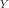 and the 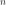 -dimensional one 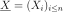 writes as follows:

where 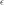 is the residual, supposed to follow the standard Normal distribution.
Each coefficient 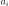 is evaluated from both samples 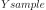 and 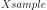 and is accompagnied by a confidence interval and a p-value (which tests if they are significantly different from 0.0).
This class enables to test the quality of the model. It provides only numerical tests. If 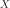 is scalar, a graphical validation test exists, that draws the residual couples 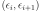, where the residual 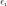 is evaluated on the samples 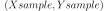: 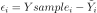 with 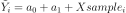. The OpenTURNS method is
VisualTest_DrawLinearModelResidual.Methods
getBasis()Accessor to the input basis. getClassName()Accessor to the object’s name. getDistribution()Accessor to the joint probability density function of the physical input vector. getId()Accessor to the object’s id. getInputSample()Accessor to the input sample. getName()Accessor to the object’s name. getOutputSample()Accessor to the output sample. getResult()Accessor to the computed linear model. getShadowedId()Accessor to the object’s shadowed id. getVisibility()Accessor to the object’s visibility state. hasName()Test if the object is named. hasVisibleName()Test if the object has a distinguishable name. run()Compute the response surfaces. setDistribution(*args)Accessor to the joint probability density function of the physical input vector. setName(*args)Accessor to the object’s name. setShadowedId(*args)Accessor to the object’s shadowed id. setVisibility(*args)Accessor to the object’s visibility state. -
__init__(*args)¶ x.__init__(…) initializes x; see help(type(x)) for signature
-
getBasis()¶ Accessor to the input basis.
Returns: basis :
BasisThe basis which had been passed to the constructor.
-
getClassName()¶ Accessor to the object’s name.
Returns: class_name : str
The object class name (object.__class__.__name__).
-
getDistribution()¶ Accessor to the joint probability density function of the physical input vector.
Returns: distribution :
DistributionJoint probability density function of the physical input vector.
-
getId()¶ Accessor to the object’s id.
Returns: id : int
Internal unique identifier.
-
getInputSample()¶ Accessor to the input sample.
Returns: inputSample :
SampleThe Xsample which had been passed to the constructor.
-
getName()¶ Accessor to the object’s name.
Returns: name : str
The name of the object.
-
getOutputSample()¶ Accessor to the output sample.
Returns: outputSample :
SampleThe Ysample which had been passed to the constructor.
-
getResult()¶ Accessor to the computed linear model.
Returns: result :
LinearModelResultThe linear model built from numerical samples, along with other useful informations.
-
getShadowedId()¶ Accessor to the object’s shadowed id.
Returns: id : int
Internal unique identifier.
-
getVisibility()¶ Accessor to the object’s visibility state.
Returns: visible : bool
Visibility flag.
-
hasName()¶ Test if the object is named.
Returns: hasName : bool
True if the name is not empty.
-
hasVisibleName()¶ Test if the object has a distinguishable name.
Returns: hasVisibleName : bool
True if the name is not empty and not the default one.
-
run()¶ Compute the response surfaces.
Notes
It computes the response surfaces and creates a
MetaModelResultstructure containing all the results.
-
setDistribution(*args)¶ Accessor to the joint probability density function of the physical input vector.
Parameters: distribution :
DistributionJoint probability density function of the physical input vector.
-
setName(*args)¶ Accessor to the object’s name.
Parameters: name : str
The name of the object.
-
setShadowedId(*args)¶ Accessor to the object’s shadowed id.
Parameters: id : int
Internal unique identifier.
-
setVisibility(*args)¶ Accessor to the object’s visibility state.
Parameters: visible : bool
Visibility flag.
-